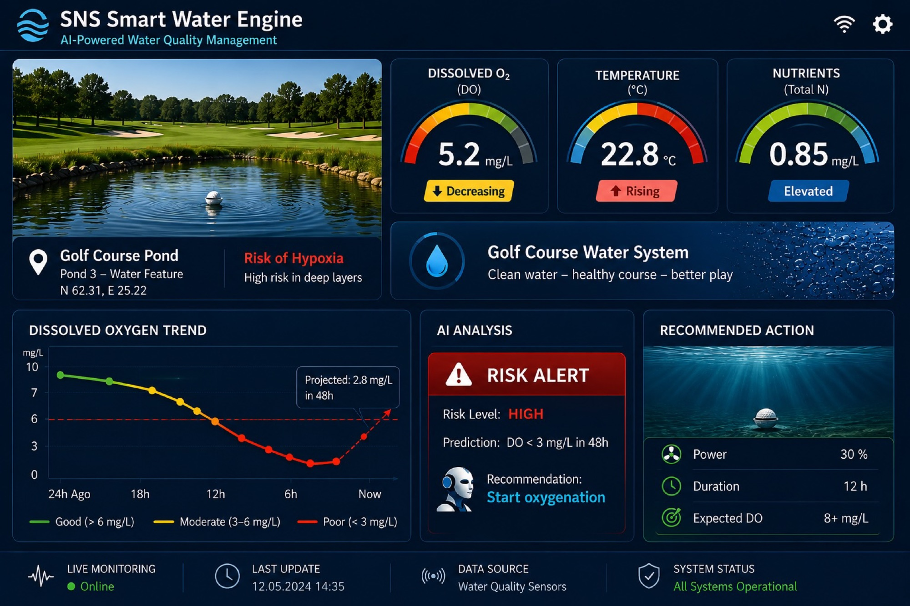

Jatkuva data · vaatimustenmukaisuusnäyttö
Omaisuuserä ei ole anturi. Se on katkeamaton tietue.
Kuka tahansa voi asentaa instrumentoinnin. Mikä on vaikeaa, ja millä on arvoa, on mittaussarja ilman aukkoja, dokumentoitu lähtöpiste ja säilytysketju joka kestää kun joku vihamielinen sen lukee. Se on se joka muuttaa fyysisen muutoksen vedessä joksikin jonka viranomainen, tarkastaja tai ostaja hyväksyy.
Mikä tekee tietueesta kestävän
Dokumentoitu lähtötaso
Tallennettu ennen toimenpidettä. Sitä ei voi jälkikäteen rekonstruoida, ja ilman sitä jokainen myöhempi luku on luku ilman vertailukohtaa.
Ei aukkoja
Jatkuvuus on se ominaisuus joka useimmin puuttuu. Sarja jossa on selittämätön hiljaisuus kriittisten viikkojen ajalta on se sarja jota kyseenalaistetaan.
Raakadata säilytetään
Käsitellyt yhteenvedot ovat luettavaksi. Raakadatasarja on se jota tarkastellaan uudelleen kun tulos kiistetään.
Riippumaton varmennus
Kun väitteellä on seurauksia, tuloksen varmentaa osapuoli joka ei ole toimittaja. Järjestelmä joka arvostelee omaa tulostaan ei ole näyttöä.
Mihin tietuetta käytetään
Lupa- ja purkuvaatimustenmukaisuus
Osoittaa että raja-arvo täyttyy jatkuvasti eikä vain niinä päivinä joina joku sattui ottamaan näytteen.
Kunnostustulokset
Osoittaa että vesistö muuttui, kuinka paljon, ja että se pysyi muuttuneena vuodenaikojen yli, ei vain kesän yli.
Krediitointi ja ESG-raportointi
Kun mitatusta muutoksesta tulee liikkeeseen laskettava tai raportoitava yksikkö, seurantatietue on se taustalla oleva omaisuuserä. Se on rakennettava sitä varten ensimmäisestä päivästä, ei koottava jälkikäteen.
Käyttö
Sama data joka todistaa tuloksen myös ajaa prosessia — asetusarvot, annostelu, hälytykset. Yksi järjestelmä, kaksi tehtävää.
Mitä käyttäjä näkee

Esimerkkinäkymä (mockup) — havainnekuva SNS WaterView -käyttöliittymästä, ei kuvakaappaus toimivasta järjestelmästä.
Mitä emme tee
Kerro mitä on todistettava.
Parametri, raja-arvo ja kuka raportin lukee. Instrumentointi seuraa siitä.
Aloita mitoituspuhelu